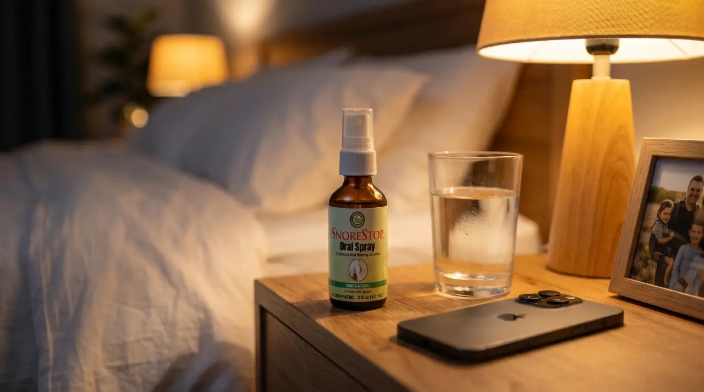

I want to be clear about something before I say anything else.
I am not a bad sleeper. I never have been. I fall asleep fast, I sleep deep, I wake up rested — or at least I used to, before my husband's snoring turned every night into something I had to survive rather than something that restored me.
And I'm not just talking about being tired. I'm talking about running a household, raising kids, holding down a job, and doing all of it on the kind of broken sleep that makes everything cost twice as much energy as it should. The patience costs more. The focus costs more. Showing up properly for the people who need me costs more.
Eight months ago I found something that took two seconds before bed and fixed the thing that had been stealing my sleep for years. It also turned out to fix something I didn't even realize was happening to my husband at the same time.
I'm writing this because both of those things matter and you need to know this exists.
I Was A Good Sleeper. This Is What Losing That Actually Feels Like.
Before my husband's snoring got bad I was the person who could fall asleep anywhere. Car journeys, flights, ten minutes on the couch before dinner. My head hit the pillow and I was gone. I woke up eight hours later feeling like myself.
I didn't know how much I took that for granted until it was gone.
It happened gradually the way these things always do. The snoring started manageable and got worse over years, louder and more frequent, until the version I was dealing with had nothing manageable about it. I'd fall asleep fine and wake up an hour later to the sound of it, and that would be my night over. Lie there. Wait. Hope it stopped. It never stopped.
And the thing about being someone who used to sleep well is that you know exactly what you're missing. You remember what it felt like to wake up and feel ready. You remember what it felt like to have energy that didn't run out by 2pm. You remember the version of yourself that existed before every day started with a deficit you'd been building since the night before.
That version of me felt further away every week. And what makes me genuinely angry now, looking back, is that the thing that brought her back was sitting in a pharmacy three miles from my house the whole time.

What Running On Empty Actually Does.
I want to talk about this because I don't think people take it seriously enough when it's "just snoring."
There's a version of tiredness that is inconvenient. You're a little slow, a little foggy, you need an extra coffee. That's not what this was.
This was the kind of tired that makes you snap at your kids over nothing and then sit in the bathroom afterward feeling like the worst person alive. The kind that makes you stare at your laptop for twenty minutes and realize you haven't processed a single word. The kind that makes you cancel on friends, skip the gym, let things slide that you care about, because you simply do not have anything left over after making it through the basic requirements of the day.
I was doing all the things I was supposed to do. I just wasn't doing any of them as well as I knew I could, as well as I used to, as well as the people who depended on me deserved.
And the worst part was that nobody around me could see it. From the outside everything looked fine. Inside I was counting the hours until I could try to sleep again, knowing it probably wouldn't work the way it was supposed to.
It wasn't just snoring. It was my quality of life, quietly eroding, one broken night at a time.
If I'd known then what I know now — that the fix was this close and this simple — I would have found it years earlier and saved myself all of it.
"This was the kind of tired that makes you snap at your kids over nothing and then sit in the bathroom afterward feeling like the worst person alive."
What I Didn't Know Was Happening To Him.
Here's the part I didn't expect when I started looking into this.
I was so focused on what the snoring was doing to me that I hadn't properly thought about what it might be doing to him. I knew he snored. I knew it kept me awake. I assumed he was sleeping fine because he certainly seemed to be.
He wasn't.
What I found when I started researching was that the kind of snoring he was doing, the loud disruptive kind that woke me up from across the room, wasn't just noise. It was a sign that his airway was partially blocked while he slept, that his body was working harder than it should through the night, that his oxygen levels were dropping and his heart was compensating, quietly, every single night, in ways that build up over years.
Snoring is not just a noise problem. When the airway is repeatedly blocked during sleep, oxygen levels in the blood drop and the heart works harder to compensate. Over years this strain accumulates — showing up as high blood pressure, irregular heartbeat, chronic fatigue, and significantly elevated risk of heart attack and stroke. Most people who snore have no idea any of this is happening while they sleep.
People who snore like that don't sleep as deeply as they think they do. They wake up tired for reasons they can't explain. They reach for coffee before they've said good morning. They think that's just how they are. It isn't. It's what years of disrupted breathing does to a body that's supposed to be resting.
I wasn't just fixing a noise problem. I was fixing something that was quietly affecting both of us every single night.
And the solution to all of it, for both of us, turned out to be something so embarrassingly simple that I still think about how many years I spent suffering through something that had a two-second answer.
What I Found And Why It Made Immediate Sense.
I came across SnoreStop late one night while I was reading about snoring causes, still awake of course, phone in hand while he slept beside me with absolutely no awareness of any of this.
A natural throat spray. Been in American pharmacies since 1995. Not a device, not a machine, not something requiring a prescription or a specialist or a process. Something you spray twice before bed and that's it.
The reason it works is simple once you understand it. Snoring is a throat problem, not a nose problem. While you sleep the soft tissue at the back of the throat relaxes and collapses slightly, and air passing through that narrowed space makes the tissue vibrate. That vibration is the sound. All of it. SnoreStop coats that tissue with a fine natural spray that reduces the vibration at the source, without anything except two seconds before bed.
I remember reading that and thinking — if this works, if something this simple actually works after everything I've been through, I'm going to be so angry at myself for not finding it sooner.
I ordered it that night.
What Happened In The First Week.
I put it on his nightstand. He noticed it, read the back, looked at me.
"For snoring?"
"Yes. Two seconds before bed. Just try it."
He shrugged and used it that night. I lay there in the dark in that specific state of cautious not-hope that you develop after enough disappointing attempts, waiting for the sound to start the way it always did.
It was quieter. Not silent but genuinely, measurably quieter, in a way I could hear clearly even though I couldn't explain exactly what had changed.
The second night was quieter still.
By day four I fell asleep before him and didn't wake up until morning. I lay there that morning just existing in the silence of a full night's sleep for the first time in years, and I felt something I hadn't felt in so long I'd almost forgotten it was possible.
I felt like myself. Fully, properly, actually myself.
Not a deficit version. Not the version that's making do. Just me, rested, ready, present.
The Price — And Why It Still Makes Me Angry.
Here is what fixing snoring actually costs in this country:
It has been trusted by over 250,000 people and has been sitting in pharmacies since before my kids were born. The thing that was stealing my sleep and quietly affecting my husband's health every single night cost under $50 and had been there the whole time. I'm a practical person. I don't get emotional about things. But that still makes me genuinely angry on behalf of every person suffering through something that has a simple inexpensive solution they just don't know exists.
Eight Months Later.
He uses it every single night. Two seconds before bed, every night, without thinking about it.
I sleep through now. Not most nights. Every night. I wake up and the first thing I feel is rested and I have stopped being surprised by that, which itself feels like an achievement after years of treating a full night's sleep as something miraculous.
The patience came back. The focus came back. The version of me that could get through a full day and still have something left over for the people who needed me in the evening came back.
My husband is less tired than he used to be too. He doesn't reach for coffee before he's said good morning anymore. He says he didn't realize how tired he was until he stopped being that tired, which is exactly what you'd expect from someone whose body had been working too hard through the night for years.
Two seconds before bed. Under $50. Been in pharmacies since 1995. I just didn't know it existed.
The Guarantee That Made The Decision Easy.
Even with everything I'd read, even knowing it made sense, I hesitated. Because hope has a cost when you've been disappointed and I wasn't sure I had the energy for another disappointment on top of everything else.
What moved me was the guarantee. SnoreStop comes with a full 30-day money back guarantee. Thirty days to try it and if it doesn't do what it says every single dollar comes back, no conversation, no justifying yourself, no runaround from a company that wasn't confident in what it was selling.
Either It Works, Or It's Completely Free.
Thirty days. If it doesn't do what it says, every dollar back, no conversation, no justifying yourself, no runaround.
For someone who was already running on empty the idea of a completely risk-free attempt at fixing this was the thing that finally made it an easy decision.
There is no version of trying this where you lose. The guarantee makes that mathematically impossible.
Why I'm Writing This.
Because I know exactly what it's like to be already at capacity and then have your sleep stolen on top of it. To be doing everything right and still feel like you're failing because you're running on a deficit you can't close no matter what you do.
The thing that was doing that to me, and to my husband in ways neither of us fully understood, had a solution that cost under $50, took two seconds before bed, and had been sitting in pharmacies since before I was a parent.
I wish someone had told me sooner. So I'm telling you now.
You're already doing everything. Let this be the one thing that finally gives something back.
Full 30-day money back guarantee — either it works or it's free
Ships in 2 days · No prescription needed · Natural ingredients